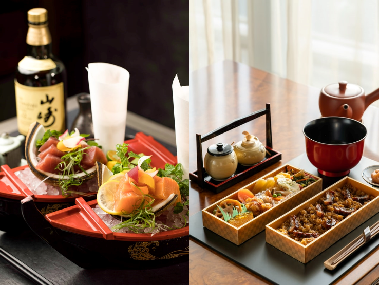

ゆう海鮮 kaisen Yuu
ゆう海鮮 kaisen Yuuゆうについて
About us
『海鮮ゆう』は、レインズインターナショナルが1996年に、東京で創業した焼肉レストランのブランドです。 創業以前、日本の焼肉市場には個人店が多く、チェーン店には「美味しくても高い店」か「安いだけの食べ放題」は存在していましたが、 安くて美味しいチェーン店はありませんでした。 このような環境で、どこでも誰でも気軽に来店できて美味しい焼肉が食べられる店の潜在ニーズを発掘し、 低価格で美味しい商品を提供することにこだわり、市場を開拓しました。 『牛角』は、レインズインターナショナルが1996年に、東京で創業した、焼肉レストランのブランドです。 現在では、日本に600店舗、海外に150店舗以上をもつ、日本で最大の焼肉レストランチェーンへ成長しました。

住所: 〒988-0604 宮城県気仙沼市廻舘115
電話番號:+81 - 226 - 262 - 011
営業時間: 午前 11:30～14:00 / 午後 17:00～23:00 / 定休日は水曜日